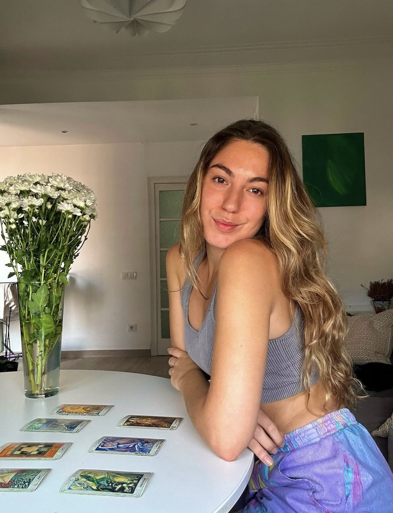
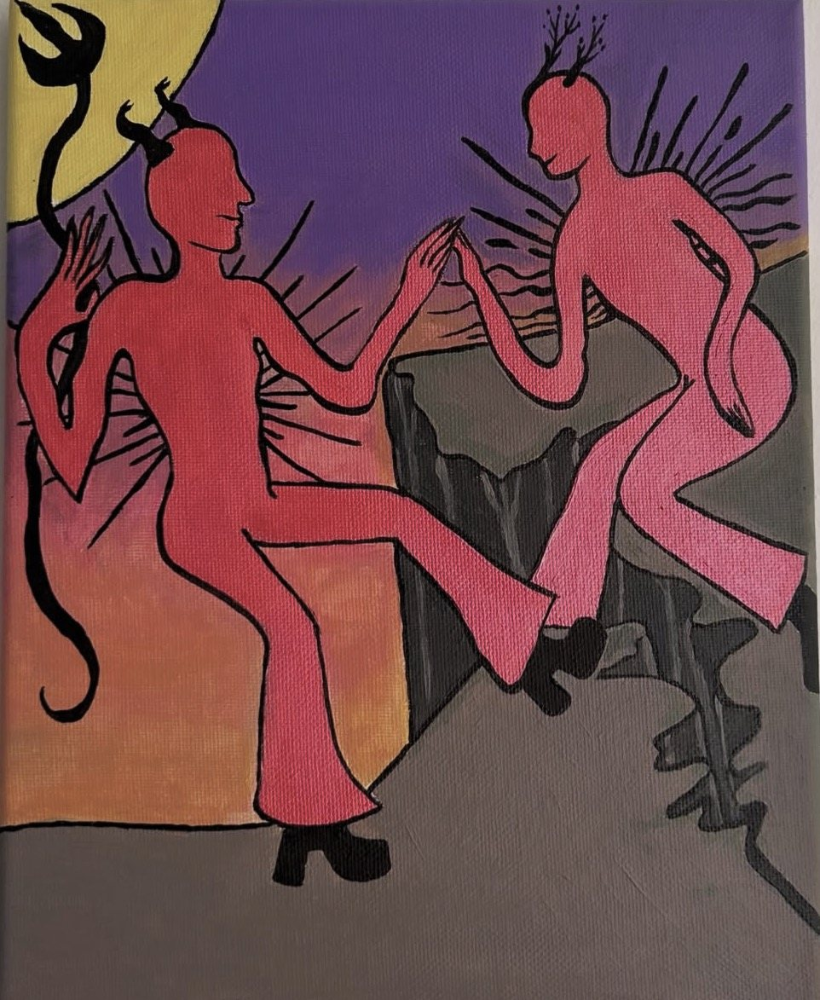
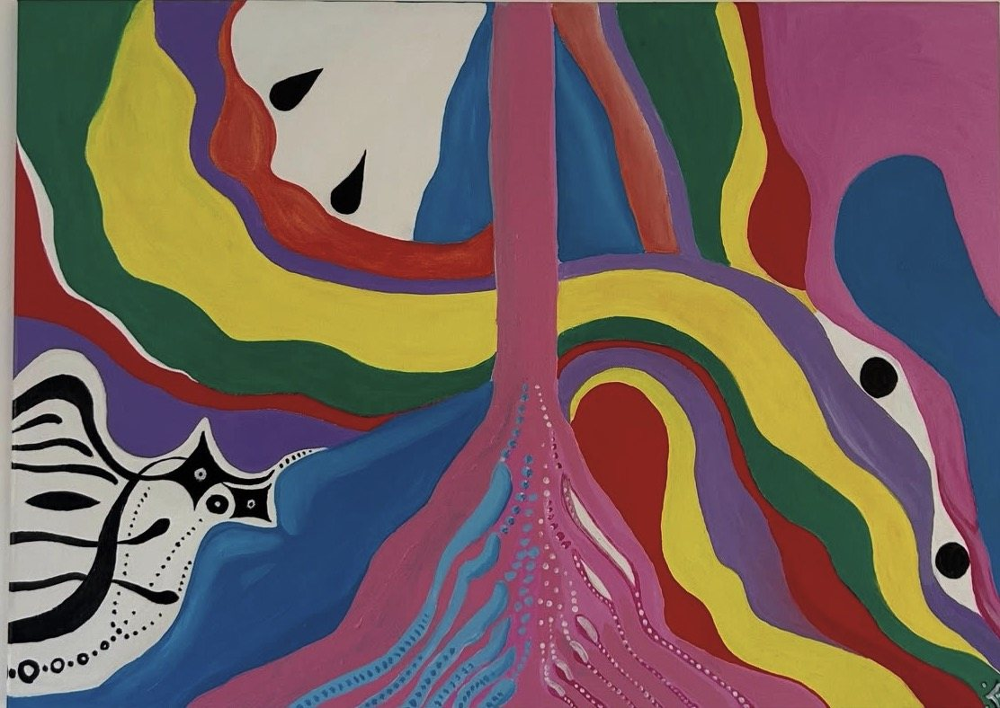

El tarot no adivina, orienta.
Soy Eva. Uso el tarot, la astrología, la pintura y la música para ayudarte a entender el momento que vives.
Ver las sesiones → Tarot en tu eventoSesiones
Elige tu carta.
Ver el detalle y reservar →Astrología, tarot de Thoth y coaching, en un mismo acompañamiento.

Sobre Eva
Cuatro lenguajes, un mismo lugar.
Crecí escuchando a mi madre y a mi tía hablar de astrología. A los 15 empecé a estudiar tarot y astrología por mi cuenta, y con los años la pintura y la música se unieron al camino. Cada lenguaje abre una puerta distinta, pero todos llevan al mismo sitio: el autoconocimiento y la transformación.
- Tarot
- Astrología
- Pintura
- Música
Obra
Lo que no cabe en una carta, lo pinto.



Eventos
El tarot, en vivo, en tu evento.
2 hEncuentro. Lecturas breves para grupos pequeños.
4 hEvento. Lecturas continuas durante la celebración.
NocheExperiencia completa, como Giro al Alma, en Gràcia.
Joyería · muy pronto
Algo se está forjando.
Estoy creando mi primera colección de joyería, hecha a mano e inspirada en los arcanos del tarot. Todavía no puedo enseñártela. Quien esté en la lista la verá antes que nadie.
Quiero estar en la lista →